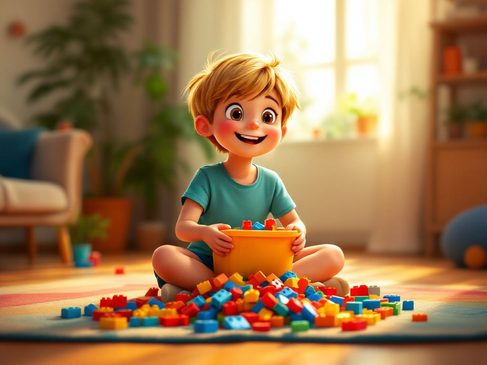
Cet après-midi, Aurélien renverse son grand bac de Lego sur le plancher du salon. Il veut fabriquer un grand bateau !
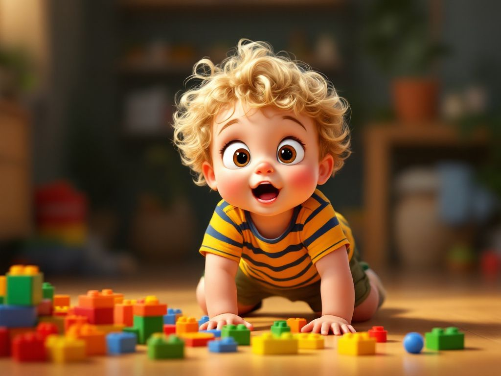
Maxence arrive à quatre pattes. Il regarde toutes ces belles couleurs vives avec de grands yeux tout ronds.
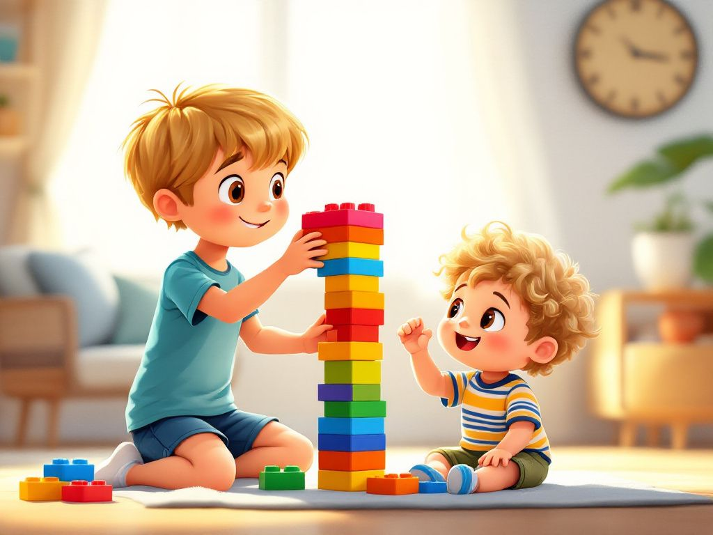
« Regarde, Maxence ! On va construire le plus beau paquebot du monde », dit Aurélien très fier.
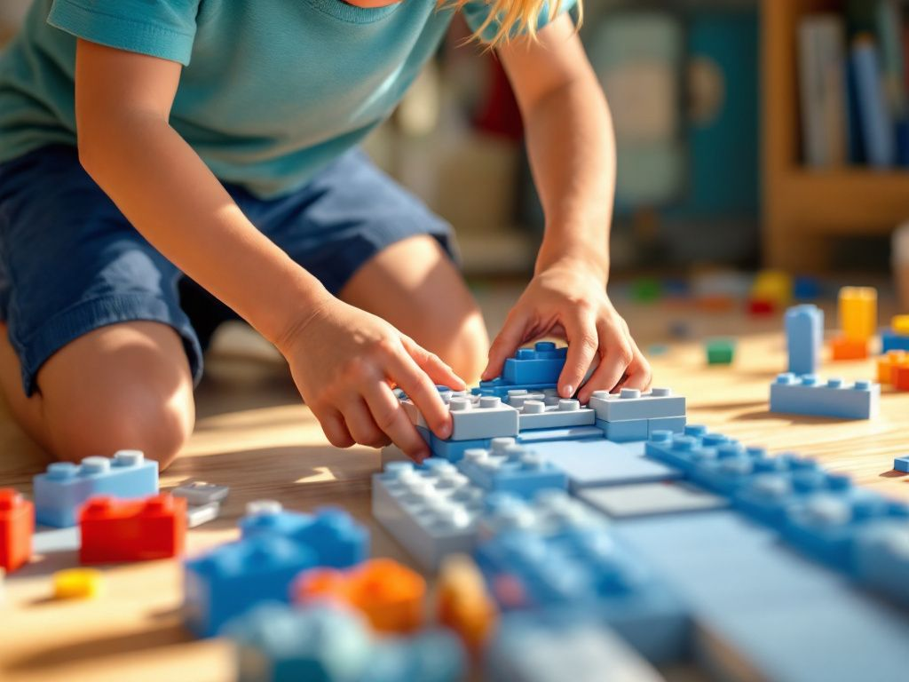
Aurélien pose de longs Lego gris pour former le bas de la coque. C’est la base solide du bateau.
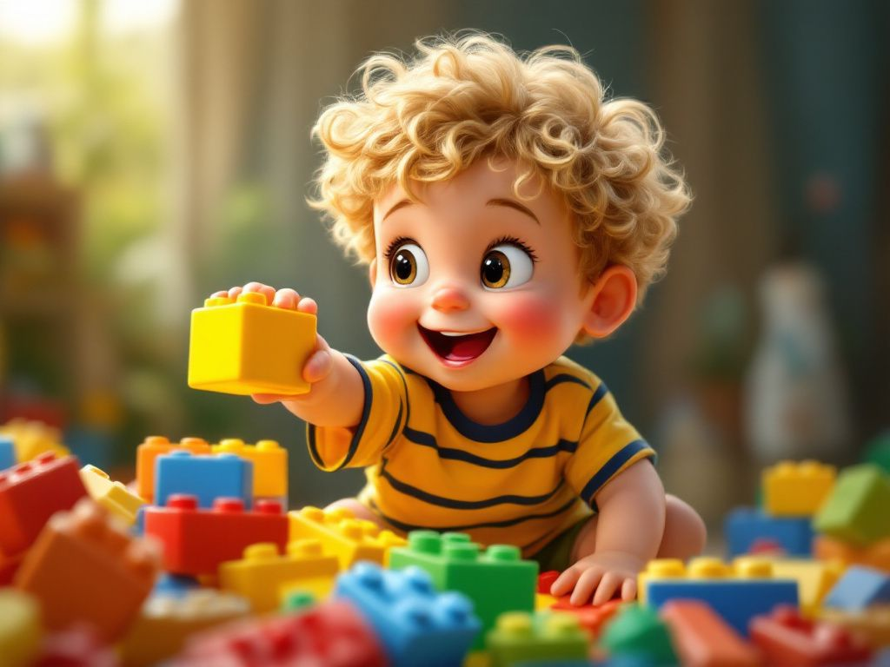
Maxence tend sa petite main potelée et attrape un joli Lego jaune. Il veut aider son grand frère !
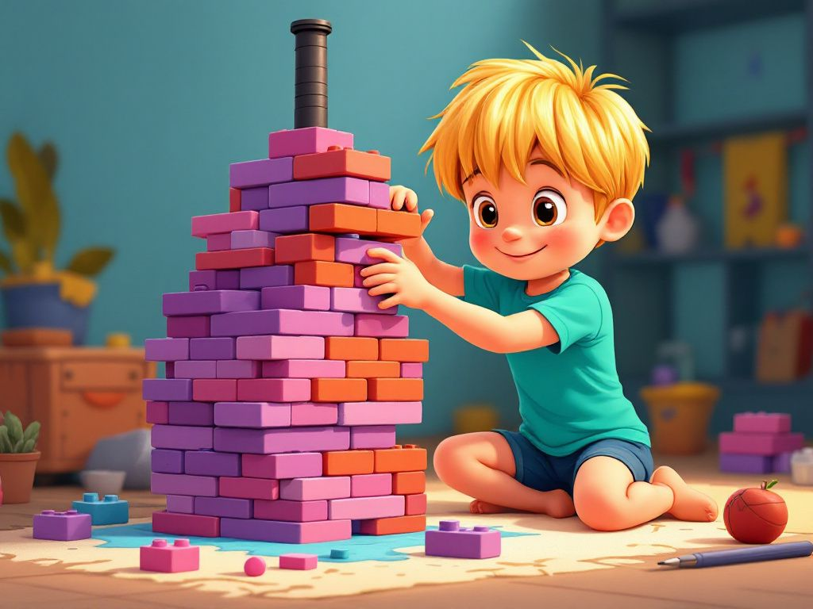
Aurélien monte la cabine avec des Lego roses et violets. Il ajoute une grande cheminée noire tout en haut.
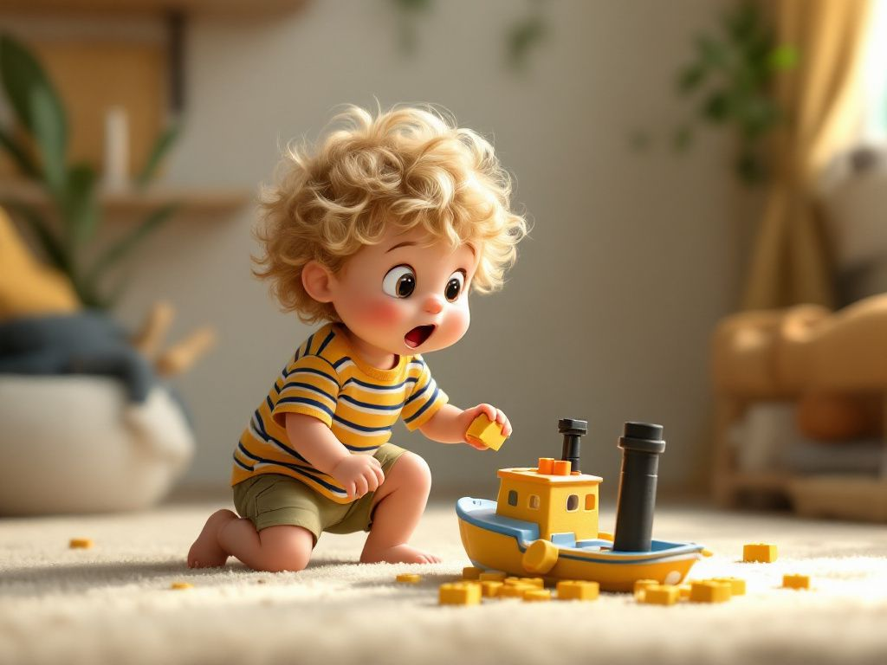
Maxence veut poser son Lego jaune… mais son pied accroche la cheminée. Patatras ! La tour noire dégringole sur le tapis.
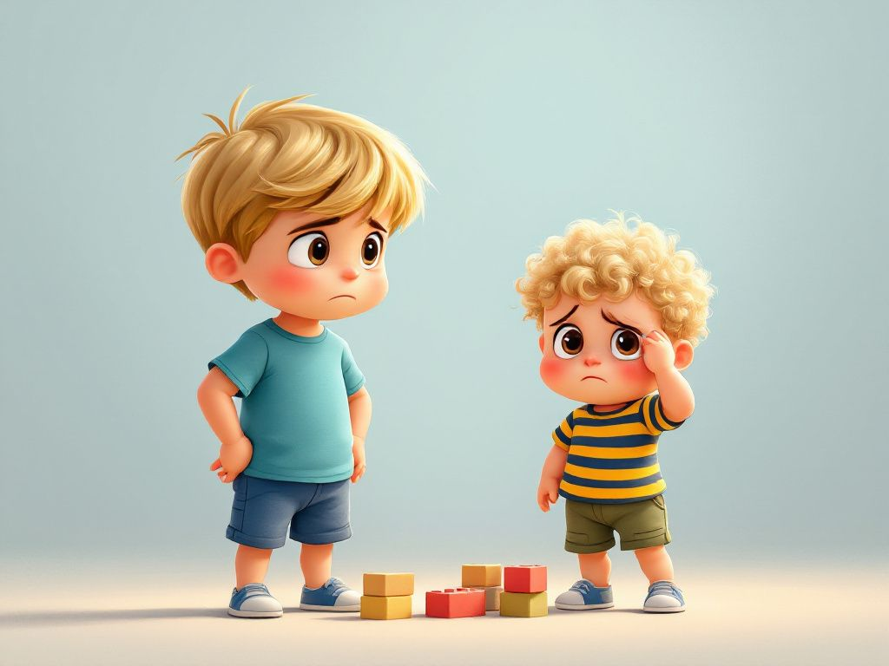
« Oh non ! » crie Aurélien, un peu fâché. Maxence baisse la tête, tout triste d'avoir cassé le jeu.
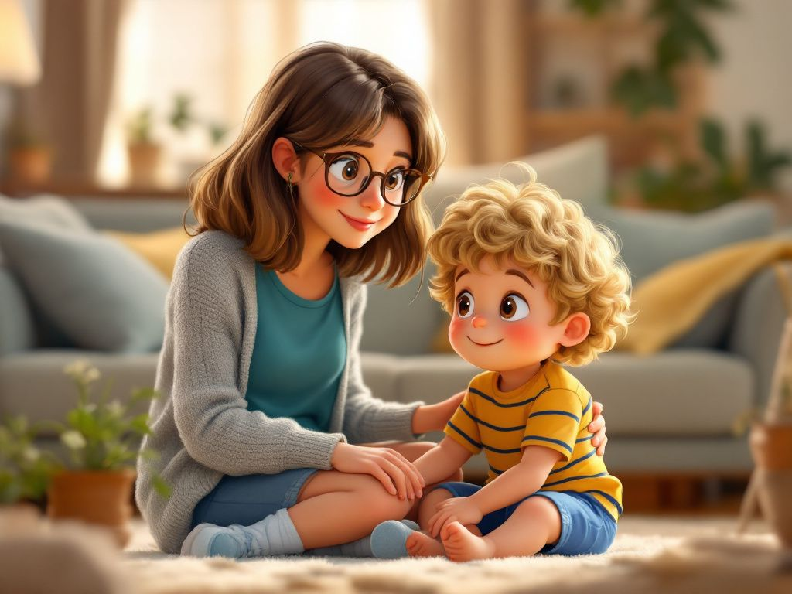
Maman s’approche en souriant : « Ce n’est rien Aurélien. Montre doucement à Maxence comment appuyer sur le Lego. »
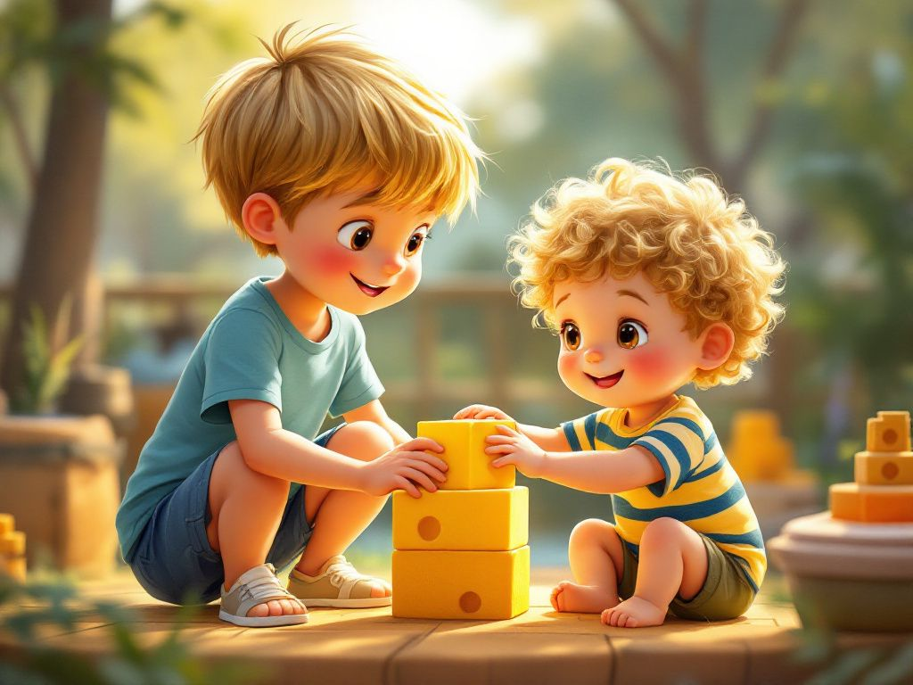
Aurélien prend la main de Maxence : « Viens, on appuie ensemble. Clic ! Voilà, c’est bien réparé ! »
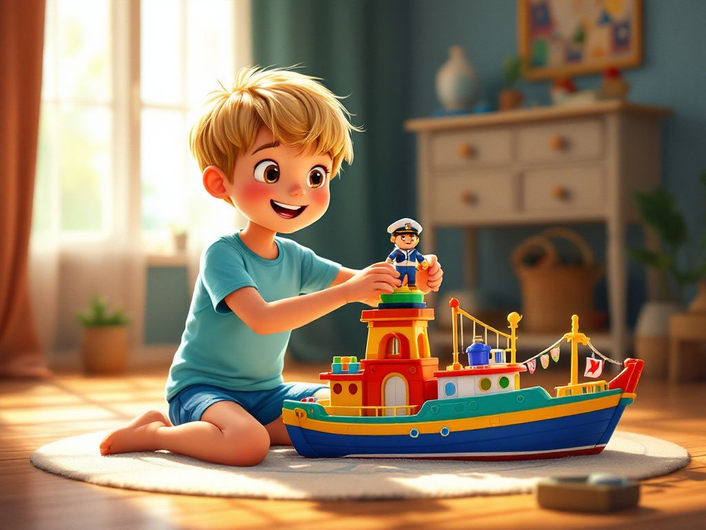
Aurélien installe un petit bonhomme en plastique tout en haut de la cabine. C’est le capitaine du paquebot !
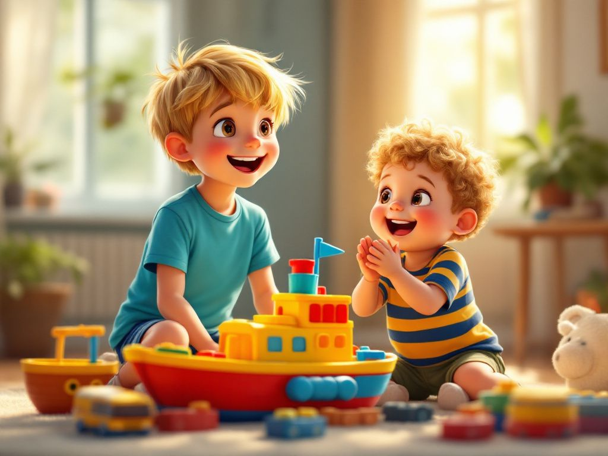
« Tchou-tchou, en route ! » crie Aurélien. Maxence applaudit très fort en rigolant. Le voyage peut enfin commencer !